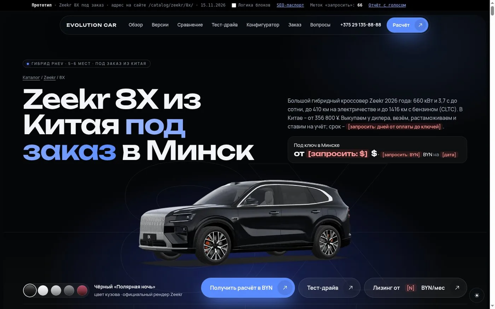

Evolution Car: итоги недели 9–15 ноября
Вывод: на сайт пришло в 3,7 раза больше людей, чем неделей раньше: 1 415 визитов против 378. Блог стал вторым входом с поиска после главной. Мы подготовили новую карточку Zeekr 8X и свой калькулятор растаможки. Чтобы выпустить их на сайт, нужны ваши ответы, они в конце страницы.
Отчёт подготовил Артём Галимов, основатель студии Deford. Цифры взяты из Яндекс Метрики evolutioncar.by и сняты 15.11 в полдень по Минску, поэтому воскресенье посчитано не целиком.
Неделя за 5 секунд
| Показатель | 2–8.11 | 9–15.11 |
|---|---|---|
| Визиты на сайт | 378 | 1 415 |
| Из рекламы Google Ads | 1 | 900 |
| Из поиска (Google + Яндекс) | 245 | 316 |
| Из поиска на статьи блога | 19 | 110 |
| Нажали на телефон | 16 | 33 |
| Нажали на мессенджер | 14 | 24 |
| Звонки через коллтрекинг (уникальные целевые) | учёта ещё не было | 14 (9) |
| Отправили заявку с формы | см. примечание | 8 |
| Доля Минска в трафике | 42 % | 65 % |
Примечание: заявки прошлой недели с этой не сравниваем. 5–6 ноября после починки форм шли проверочные отправки, и они смешались с настоящими. Метрика считает только тех, кто согласился на cookie, поэтому полный список заявок – у вас в Telegram, Битрикс24 и кабинете сайта.
1. Людей стало больше, и это нужные люди
- Основной рост дала реклама Google Ads, 900 визитов за неделю.
- Поиск вырос на 29 %, с 245 до 316 визитов. В Беларуси главный поисковик Google: на него приходится 9 из 10 визитов с поиска.
- Трафик стал местным. Беларусь – 90 % визитов против 74 % неделей раньше, Минск – 65 % против 42 %.
- Обращений стало больше: нажатий на телефон – 33 против 16, на мессенджеры – 24 против 14. С этой недели коллтрекинг считает звонки в Метрике: 14 звонков, из них 9 уникальных и дольше 30 секунд.
2. Что вышло на сайт за неделю
- 25 новых статей в блоге под то, что ищут в Беларуси: растаможка, утильсбор, как пригнать из Кореи, сколько ждать машину из Китая, где заряжать электромобиль, обзоры Geely Monjaro, BYD, Voyah, Zeekr 7X и других. Все 25 открываются на сайте. С поиска на статьи пришли 110 человек против 19 неделей раньше. Лидер – обзор Geely Monjaro, 27 визитов.
- Сравнение и избранное теперь на всех карточках каталога. Раньше они были только у Li Auto L6, L7 и L9.
- Заставка показывается один раз на устройство, при повторных заходах больше не мешает.
- Метрика точнее считает интерес. Отказом больше не считается визит, в котором человек прокрутил страницу или нажал кнопку. Из-за этого показатель отказов до 13.11 и после него сравнивать нельзя.
- Позиции в поиске теперь снимаются по Минску.
3. Что подготовили к запуску

- Новая карточка модели на примере Zeekr 8X. 16 блоков в том порядке, в каком покупатель задаёт вопросы: какая машина, какую версию выбрать, сколько стоит, почему вам можно доверять, какие риски, как заказать. В карточке – 7 версий с ценой в Китае, сравнение комплектаций, тест-драйв, лизинг и расчёт в BYN. Страницы Zeekr 8X на сайте ещё нет, а в Минске эту модель ищут 229 раз в месяц, по Беларуси – 519. Открыть прототип
- Свой калькулятор растаможки. Бензин и дизель считает по формуле ГТК, результат сверен до цента. Электромобили и последовательные гибриды – по Указу № 428. Для параллельных гибридов, таких как Zeekr 8X, показывает два расчёта: таможня пока не разъяснила, по какой схеме их считать физлицам в 2026 году. Открыть калькулятор
- 46 конфигураторов новых машин из Китая: Zeekr – 11 моделей, Xpeng – 11, Li Auto – 7, Avatr – 5, Lynk & Co – 5, Geely – 4, Xiaomi – 3. Картинки официальные, для каждой сборки, в конце – кнопка «Отправить сборку менеджеру». На сайте сейчас 16 конфигураторов, новые встроим в карточки моделей. Все конфигураторы
- 3D-шоурум Zeekr в зале Evolution Car с вашим логотипом. Открыть
- Единый кадр для карточек: машина у вашего фасада на Машерова, 15/4. Фон везде один, поэтому каталог будет выглядеть одной серией.

4. Что узнали о рынке
- У Атлант-М нет Li Auto, Voyah, Deepal, Avatr, Xiaomi, Denza и Aito. По этим маркам в Минске около 9,5 тыс. запросов в месяц. С них предлагаем начать: здесь проще всего забрать покупателя у крупного игрока. Карточки Атланта при этом технически слабые: поисковик не видит в них цен. Разбор Атлант-М
- Рынок Минска: спрос, конкуренты и цены по направлениям Китай, Корея, Европа и США. Покупатели пишут в запросах «в Беларусь», а не «в Минск». Европу ищут в основном через растаможку. Рынок Минска
- Кто впереди в поиске и почему: у westmotors.by и lemon-cars.by сотни тысяч страниц лотов. Разбор конкурентов
5. Что не получилось
- С 14.11 новые статьи не выходили. С понедельника снова выпускаем по 5 статей в день.
- Нет данных Яндекс Вебмастера о показах в поиске: они не обновляются с 9 октября. Метрика при этом видит визиты из Яндекса, значит сайт в поиске есть. Разбираемся с доступом.
- Мелочи, найденные по ходу. Конфигураторов Zeekr 7X и 9X нет в карте сайта. В адресе одной карточки BYD опечатка. Запас хода Zeekr 7X у нас расходится с Атлант-М. Исправим на этой неделе.
План на 16–22 ноября
Главное (зависит от ваших ответов ниже):
- Выпустить на сайт карточку Zeekr 8X по прототипу.
- Поставить на сайт калькулятор растаможки с курсом НБРБ.
Второстепенное:
- Встроить новые конфигураторы в карточки моделей.
- Начать карточки марок, которых нет у Атлант-М: Li Auto, Voyah, Deepal, Avatr, Xiaomi.
- Выпускать по 5 статей в день.
- Исправить мелочи из раздела 5.
Что нужно от вас
- Цены под ключ по 7 версиям Zeekr 8X. Кто их даёт и на какую дату?
- Тест-драйв и лизинг. Для тест-драйва: где, сколько длится, нужен ли депозит. Для лизинга: партнёр, аванс, ставка.
- Заказ. Какая предоплата, что фиксируется в договоре и сколько дней проходит от оплаты до ключей?
- Фото. Подходит ли кадр у фасада для всех карточек? Есть ли пресс-кит Zeekr или свои фото 8X? Пресс-фото с чужих сайтов на сайт ставить нельзя.
- Курс и брокер. По какому курсу считает платёжный агент? Кто подтвердит утильсбор и льготу на электромобили в 2026 году?
- Порядок работы. Согласны начать с марок, которых нет у Атлант-М, и пилота на Zeekr 8X?
Ответить можно в Telegram, голосом или текстом, по номерам.